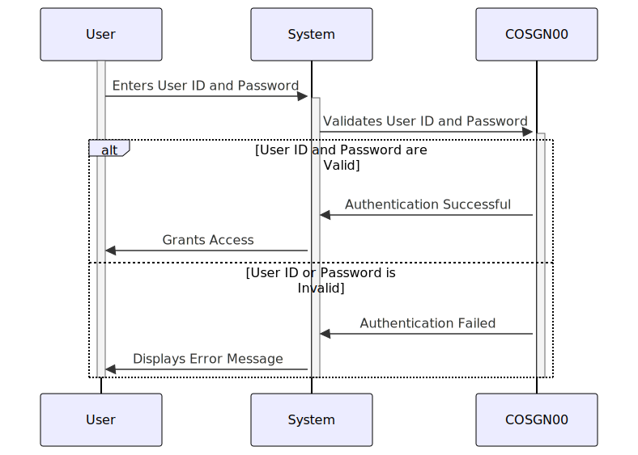

Gerado em: 1º de outubro de 2024
Título do Documento: Gerenciamento de Informações de Login do Usuário
Descrição Resumida: Este documento descreve a estrutura e o gerenciamento das informações de login do usuário no aplicativo CardDemo. Ele se concentra em como os detalhes do usuário são coletados, organizados e usados durante o processo de login.
Histórias do Usuário:
Como usuário do sistema, preciso fornecer minhas credenciais de login para poder acessar o sistema.
Epic Relacionado: 6 - Gerenciamento de Usuários e Segurança
Requisitos Funcionais:
- O sistema deve fornecer duas estruturas de dados, COSGN0AI e COSGN0AO, para armazenar informações de login do usuário.
- COSGN0AI deve incluir campos para:
- Nome da Transação (por exemplo, login, logout)
- Títulos de Tela
- Data e Hora da ação
- ID do Usuário
- Senha
- Mensagem de Erro
- COSGN0AO deve usar a cláusula REDEFINES para fornecer uma visão alternativa dos dados armazenados em COSGN0AI, permitindo a interpretação flexível dos dados.
- O sistema deve garantir o armazenamento seguro de IDs de usuário e senhas para evitar acesso não autorizado.
- O sistema deve fornecer mensagens de erro claras e informativas ao usuário em caso de tentativas de login inválidas.
- O sistema deve manter a integridade dos dados, garantindo a consistência e a precisão das informações de login do usuário.
Requisitos Não Funcionais:
- Segurança: As informações de login do usuário, especialmente senhas, devem ser tratadas e armazenadas com segurança para evitar acesso não autorizado e proteger a privacidade do usuário.
- Desempenho: O processo de login deve ser rápido e eficiente, minimizando o tempo que um usuário leva para acessar o sistema.
- Confiabilidade: O sistema deve ser confiável no tratamento das informações de login do usuário, garantindo que usuários válidos possam acessar o sistema de forma consistente.
- Manutenibilidade: O código para gerenciar as informações de login do usuário deve ser bem estruturado, documentado e fácil de manter para futuras atualizações ou modificações.
Critérios de Aceitação:
- O sistema armazena e recupera com sucesso as informações de login do usuário.
- O sistema valida as credenciais do usuário com precisão, concedendo acesso a usuários autorizados e negando acesso a usuários não autorizados.
- O sistema exibe mensagens de erro apropriadas para tentativas de login incorretas.
- O sistema garante a segurança das credenciais do usuário, protegendo-as de acesso não autorizado.
Melhorias de Código:
- Implementar um mecanismo de criptografia de senha mais robusto para aumentar ainda mais a segurança das senhas armazenadas.
- Adicionar registro detalhado de tentativas de login, incluindo timestamps e IDs de usuário, para fins de auditoria e monitoramento de segurança.
- Considere o uso de um módulo de segurança centralizado para lidar com autenticação e autorização em todo o aplicativo.
Melhorias de Segurança:
- Implementar a autenticação multifator para fornecer uma camada adicional de segurança além do nome de usuário e senha.
- Implementar políticas de senha forte, exigindo que os usuários criem senhas que atendam a determinados critérios de complexidade.
- Auditar regularmente o sistema em busca de vulnerabilidades de segurança e implementar as atualizações ou patches necessários.
Diagrama Conceitual:

–Made by “Smart Engineering” (by Compass.UOL)–